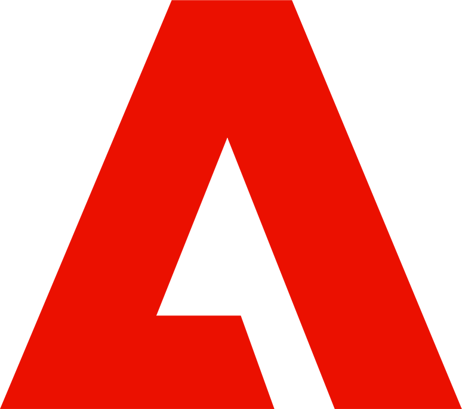
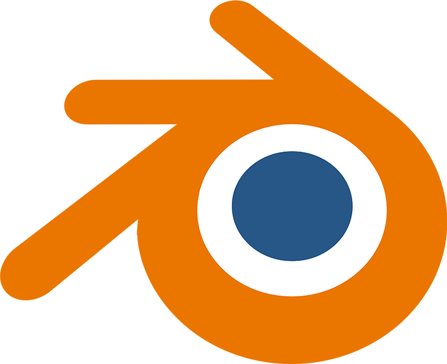
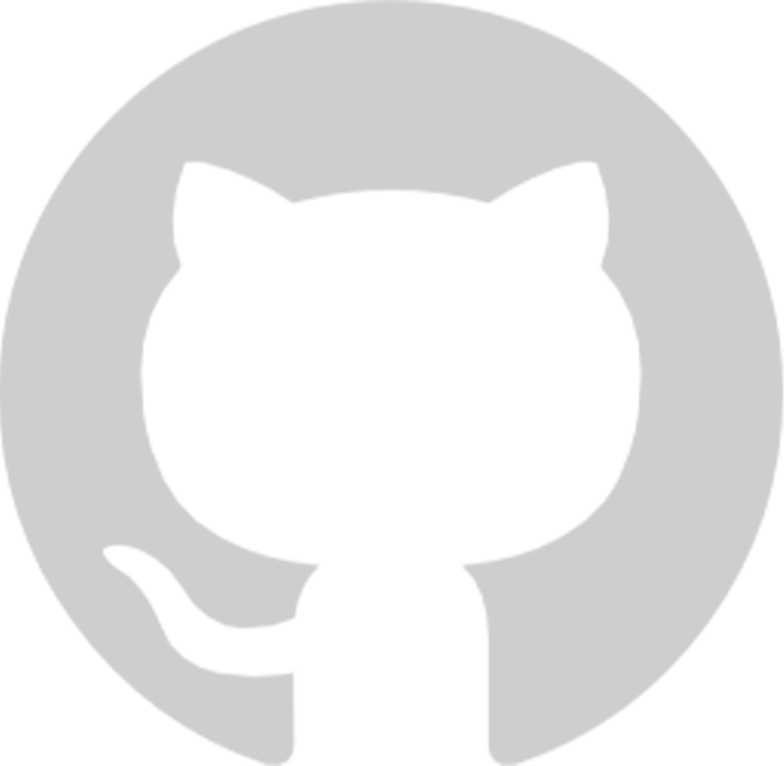
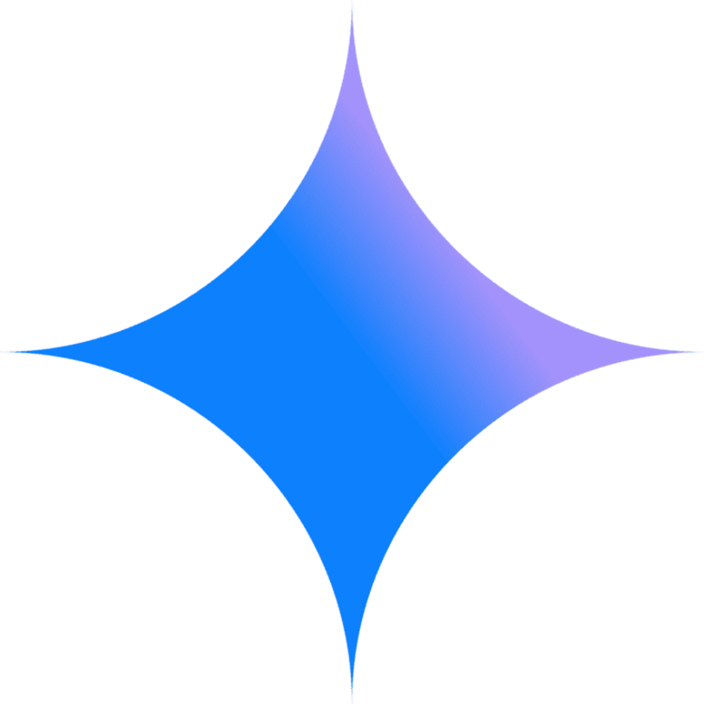

Marketing Designer
Content that gets noticed.
Social posts, banners and campaign visuals that keep a brand consistent and on message.
Every photo is a story told through light. These are the moments I chose to keep.
Get in Touch
Hi, I'm a graphic designer based in Ho Chi Minh City. I design social content,
logos, typography and packaging — clean structure first, then a touch of glow
to make it memorable.
I love turning simple ideas into visuals people actually remember.




From first idea to print-ready files — design that looks sharp and stays consistent everywhere.
Content that gets noticed.
Social posts, banners and campaign visuals that keep a brand consistent and on message.
Shelf presence that sells.
Labels and boxes that read at a glance and arrive print-ready.
Marks that get remembered.
Logos and visual identities, with clear rules for colour and type.
Motion that brings ideas to life.
3D visuals and edited videos that add depth and movement to a brand.
See everything I've designed.
View all workSocial content, logos, typography and packaging for F&B and trading brands.
One thing you delivered here — and the result it had.
A foundation in composition, colour and typography.